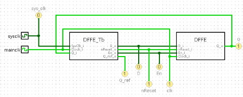

测试平台仿真
可以向电路添加测试平台来进行测试，但必须考虑仿真架构带来的以下限制。

仿真必须由 Logisim 驱动
不能向测试平台添加会生成事件的元素，例如时钟生成器进程。测试平台必须从 Logisim 获取外部时钟作为输入。
不要使用基于时间的条件
Logisim 不表示仿真时间，因此不能使用基于时间的事件，例如wait for 5 ns。如果要进行异步验证，必须添加一个sysclk，其频率至少为主时钟的两倍。这样不仅可以在主时钟上升沿检查信号，也可以在需要的其他时刻检查信号。
下一节： 用户指南。